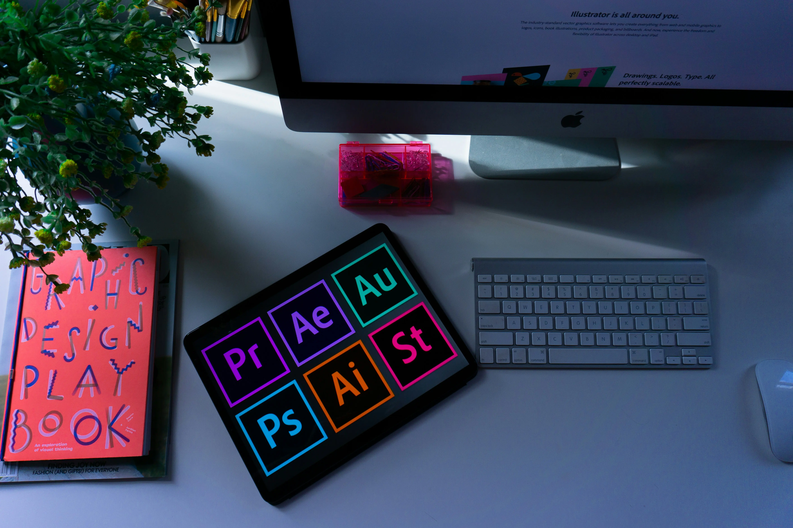

ost businesses don’t have a marketing problem. They have a structure problem.
You may already have a website, social media pages, content, and some level of visibility. But if these aren’t working together clearly, consistently, and intentionally, such that attention is strategically captured, guided, and converted, the outcome is predictable:
You may get attention or inquiries — but not consistent business.
And this is where most businesses break down.
So even when people show interest, they hesitate. They drop off.
And they don’t come back.
Fixing this requires more than isolated services.
It requires a defined system for how your business shows up, communicates, and moves people from first contact to long-term customer.
ULTIMATELY, IT COMES DOWN TO ONE THING:

This is the core of the work.
Most businesses focus on getting attention, the real difference comes from what happens after attention is gained. They lose customers due to poor communication, slow responses, or inconsistent interactions.
I manage:
Every prospect that reaches out feels acknowledged, understood, and guided clearly, from first contact to decision. Thus building retention, not just traffic.
To make this work, every part of your digital presence must support it.
This includes how your business is presented through :

Your website becomes more than an online presence, it becomes a conversion system that turns visitors into enquiries and paying customers.
Instead of people visiting and leaving without action, your site guides them clearly, builds trust quickly, and makes it easy for them to choose you.
You stop losing potential clients due to poor structure, slow performance, or unclear messaging. Every page works intentionally to move visitors toward contacting you or making a decision.

Contents are optimized to make your audience stop scrolling and start paying attention. I create content that makes your brand memorable and instantly recognizable, every post, visual, or story moves people closer to choosing you over competitors.
I help you communicate clearly so your audience understands your value immediately, you get content that strengthens perception and builds emotional connection. Your audience begins to engage more because your content speaks their language.
Every piece of content works together to grow your influence and reputation.

Content marketing turns your content into a revenue engine, instead of guessing, your audience receives value that builds trust automatically. Your brand becomes the authority people listen to and learn from, thereby increasing awareness.
Potential clients begin to see you as a solution, not just another option. Your business gets predictable visibility that compounds over time.
Lead quality improves because people who come to you already believe in your expertise. Your brand earns long-term loyalty, not one-time attention, every piece of marketing content works intentionally to drive growth and conversions.

My approach is shaped by hands-on experience managing high-value client relationships, closing multi-million naira deals, and optimizing customer journeys from first contact to long-term retention.
From structured WhatsApp conversions to enterprise-level negotiations, I focus on what actually drives business results, not just what looks good.